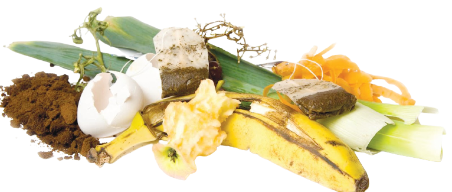
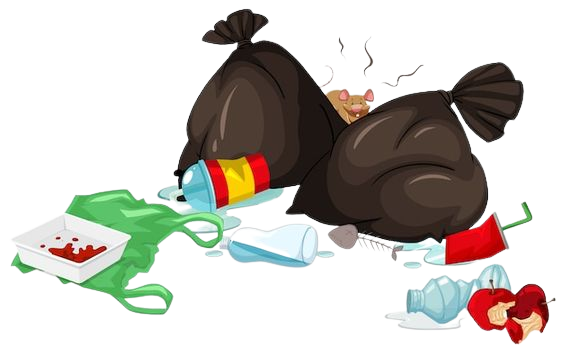
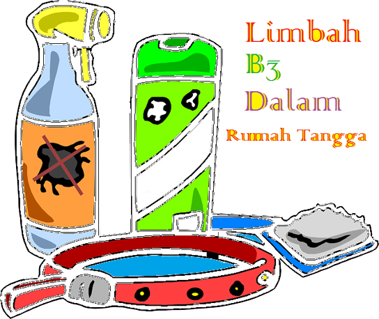
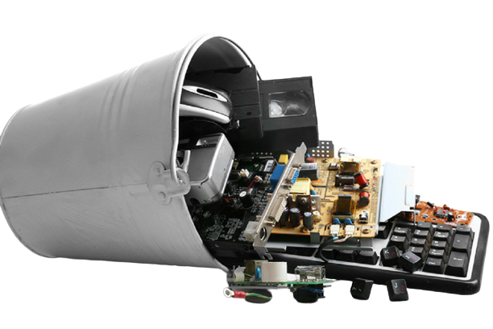
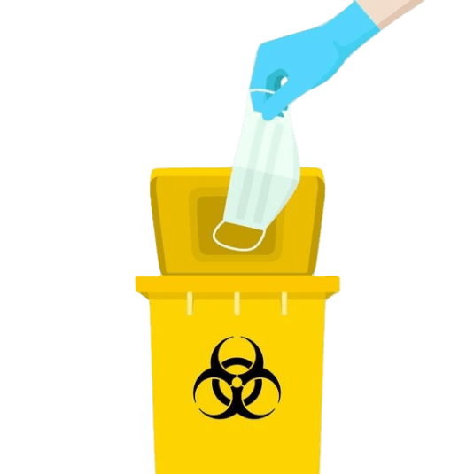

1. SAMPAH ORGANIK
Pengolahan: Kompos atau pengomposan adalah proses alami di mana sampah organik diuraikan oleh mikroorganisme menjadi pupuk kompos yang berguna.
Contoh: Sisa makanan, dedaunan, kulit buah, dan sayuran.


2. SAMPAH ANORGANIK ATAU NON-ORGANIK:
Pengolahan: Pemilahan dan daur ulang adalah cara umum untuk mengelola sampah non-organik. Sampah dikumpulkan, dipilah berdasarkan jenisnya, dan bahan yang dapat didaur ulang diproses untuk digunakan kembali.
Contoh: Kertas, plastik, logam, kaca, dan kain.


3. SAMPAH B3 (BAHAN BERBAHAYA DAN BERACUN)
Pengolahan: Sampah B3 harus diurus secara khusus karena dapat mencemari lingkungan dan berpotensi berbahaya bagi manusia. Pengolahan yang tepat meliputi pengumpulan, pemilahan, dan pengolahan khusus oleh pihak yang berwenang.
Contoh: Baterai, lampu pijar, pestisida, cat berbahaya, dan obat-obatan kadaluarsa.


4. SAMPAH ELEKTRONIK
Pengolahan: Sampah elektronik atau e-waste sering kali diolah melalui proses daur ulang. Komponen yang berharga diekstraksi untuk digunakan kembali, sementara komponen berbahaya diproses secara aman.
Contoh: Ponsel bekas, komputer, laptop, televisi, dan printer.


5. SAMPAH MEDIS
Pengolahan: Sampah medis harus dikelola dengan hati-hati karena dapat mengandung patogen dan bahan berbahaya. Pengolahan meliputi pengumpulan, sterilisasi, dan pemusnahan yang sesuai.
Contoh: Jarum suntik, perban bekas, sarung tangan medis, obat-obatan kadaluarsa, dan limbah laboratorium medis.